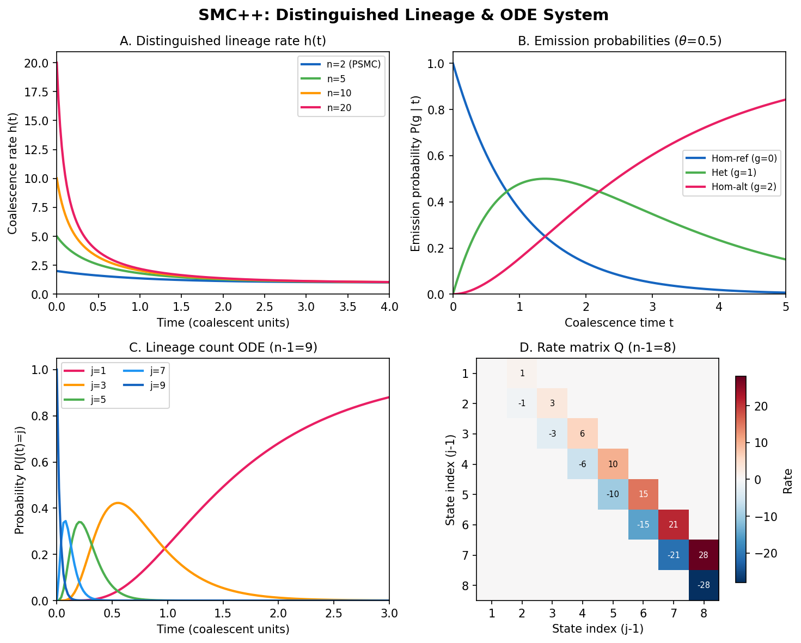

Overview of SMC++
Before adding the chronograph complication, understand why the two-hand watch isn’t enough.
{kind=link}

SMC++ at a glance. The distinguished-lineage approach to multi-sample demographic inference: coalescence rate \(h(t)\) for varying sample sizes, emission probabilities linking hidden states to observations, ODE lineage-count evolution tracking how many lineages remain at each time, and the rate matrix structure that drives the HMM.
From Two Sequences to Many
In Timepiece I, we built PSMC: a Hidden Markov Model that reads population size history \(N(t)\) from a single diploid genome. The two haploid copies of one individual’s chromosomes provided a sequence of coalescence times along the genome, and the HMM decoded these times into a piecewise-constant demographic history.
PSMC works remarkably well for deep history – population size changes between roughly 20,000 and 3,000,000 years ago (for humans). But it has a fundamental limitation: two sequences cannot resolve recent demographic events.
Why? Because two lineages take a long time to coalesce in a large population. The expected coalescence time for two lineages in a population of size \(N\) is \(2N\) generations. For a population of 10,000 diploids, that is 20,000 generations – roughly 500,000 years for humans. Events more recent than \(\sim 20{,}000\) years produce so few coalescence-time changes along the genome that PSMC simply cannot resolve them.
More sequences help because they increase the rate at which some pair coalesces. With \(n\) haplotypes, the total coalescence rate is \(\binom{n}{2} / N\), which grows quadratically with sample size. This means the most recent coalescence event typically happens in the very recent past, providing signal about recent \(N(t)\) that two sequences alone cannot capture.
import numpy as np
def expected_first_coalescence(n, N):
"""Expected time to first coalescence among n lineages in population N.
With n lineages, the rate of coalescence (any pair finding a common ancestor)
is C(n,2) / N = n(n-1) / (2N). The expected waiting time is the inverse of
this rate.
Parameters
----------
n : int
Number of haploid lineages (= 2 * number of diploid individuals).
N : int
Effective population size (diploid).
Returns
-------
float
Expected time to first coalescence, in generations.
"""
rate = n * (n - 1) / (2 * N)
return 1 / rate
# With just 2 lineages (PSMC):
print(f"n=2: {expected_first_coalescence(2, 10000):.0f} generations")
# With 20 lineages (10 diploid samples, as in SMC++):
print(f"n=20: {expected_first_coalescence(20, 10000):.0f} generations")
# With 200 lineages (100 diploid samples):
print(f"n=200: {expected_first_coalescence(200, 10000):.1f} generations")
n=2: 10000 generations
n=20: 53 generations
n=200: 0.5 generations
The leap from 10,000 generations (PSMC) to 53 generations (10 samples) to 0.5 generations (100 samples) is dramatic. More samples push the resolution window into the very recent past.
The Challenge: State Space Explosion
The obvious approach would be to generalize PSMC to \(n\) lineages by tracking the full marginal genealogy at each position – not just a single coalescence time, but the complete tree relating all \(n\) haplotypes. This is essentially what SINGER (Timepiece VII) and ARGweaver (Timepiece V) do.
But this comes at enormous computational cost. The number of possible tree topologies for \(n\) labeled taxa grows super-exponentially:
For \(n = 10\), that is 17.6 billion. No HMM can have 17.6 billion hidden states.
MSMC (Schiffels & Durbin, 2014) took a middle path: it generalizes PSMC to 2–8 haplotypes by tracking which pairs of lineages share their most recent common ancestor. But even this approach struggles beyond 8 sequences because the state space still grows super-exponentially.
SMC++ takes a fundamentally different approach.
The Distinguished Lineage Trick
SMC++’s key insight (Terhorst, Kamm & Song, 2017) is to avoid tracking the full genealogy altogether. Instead, it:
Distinguishes one lineage from the rest. The coalescence time \(T\) of this distinguished lineage is the hidden variable in the HMM – exactly like PSMC, where \(T\) is the coalescence time of the two haplotypes.
Treats the remaining \(n - 1\) lineages as a demographic background. These undistinguished lineages affect the rate at which the distinguished lineage coalesces, but their individual genealogical relationships are not tracked. They simply provide additional information about \(N(t)\) through the rate at which they coalesce with each other and with the distinguished lineage.
Works with unphased data. Because SMC++ does not need to know which haplotype came from which chromosome copy, it can use standard diploid genotype data without the phasing step that MSMC and SINGER require.
PSMC (Timepiece I):
Lineage 1 --------+
| T (coalescence time)
Lineage 2 --------+
MRCA
SMC++ (this Timepiece):
Distinguished -----+
| T (coalescence time -- the hidden state)
Undistinguished 1 --+--+
Undistinguished 2 -----+--+
Undistinguished 3 --------+
... |
(demographic background:
these coalesce among themselves
and modify the rate for T)
The state space is the same as PSMC’s: the discretized coalescence time of one lineage. The extra lineages enter through the transition and emission probabilities, not through additional hidden states. This is the trick that makes SMC++ scale.
Composite Likelihood
With \(n\) diploid samples, SMC++ does not run a single HMM over all of them. Instead, it forms composite likelihood – the product of likelihoods computed independently for each pair of (distinguished sample, undistinguished panel). Each pair contributes a term to the log-likelihood:
where \(\mathbf{X}_i\) is the data from the \(i\)-th sample and \(\text{panel}_{-i}\) is the remaining \(n - 1\) samples acting as the demographic background.
Composite likelihood is not a true likelihood – the terms are not independent, so confidence intervals need adjustment. But it is a consistent estimator: as the amount of data grows, the composite likelihood estimate converges to the truth. And it is computationally tractable: each term is just a PSMC-like HMM computation.
Historical Context
SMC++ sits at a precise point in the history of coalescent-based demographic inference:
Year |
Method |
Samples |
Key idea |
|---|---|---|---|
2011 |
PSMC |
1 diploid |
Two-sequence HMM under the SMC |
2014 |
MSMC |
2–4 diploids |
Multi-sequence HMM, track pairwise states |
2017 |
SMC++ |
1–hundreds of diploids |
Distinguished lineage + ODE system |
2019 |
SINGER |
1–tens of haplotypes |
Full ARG sampling via two-HMM architecture |
PSMC showed that a single genome contains deep demographic history. MSMC showed that adding a few more sequences sharpens recent history. SMC++ showed that you can scale to hundreds of samples by giving up on full genealogical inference and focusing on the one quantity that matters: the coalescence time of a distinguished lineage. SINGER then returned to full ARG inference with new algorithmic ideas.
Each method makes a different trade-off between the richness of the inferred genealogy and computational scalability. SMC++ sacrifices genealogical detail for sample size – and in doing so, achieves the best resolution of recent population size changes among all methods in its class.
What We Will Build
Over the next four chapters, we will build SMC++ from scratch:
The Distinguished Lineage – The mathematical setup: the distinguished lineage, the undistinguished background, and why unphased data works. This is the generalization of PSMC’s two-lineage framework.
The ODE System – The ODE system that tracks how many undistinguished lineages remain as we look back in time. The matrix exponential solution and verification against msprime simulations.
The Continuous HMM – The HMM transition matrix derived from the ODE rates, composite likelihood across samples, and gradient-based optimization. This is where the inference engine comes together.
Population Splits – Extending SMC++ to multiple populations: modified ODEs for pre- and post-split epochs, and joint estimation of divergence times and population sizes.
Each chapter derives the math, implements it in code, and verifies against simulation. By the end, you will have built a complete chronograph – and you will see exactly how PSMC’s simple two-hand watch grows into a multi-dial instrument.